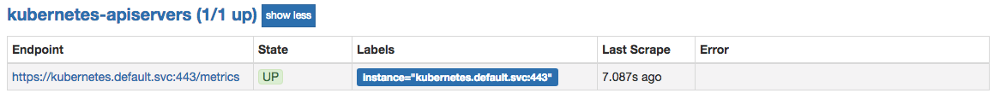

监控集群状态
当使用Kubernetes管理一个多节点的集群中，除了需要关注集群中部署应用的运行状态和节点的资源使用情况以外，我们还应该关注Kubernetes本身的状态。Kubernetes作为一个中央化的任务调度系统，我们希望它能够相对较快的完成对用户操作的响应。在这一小节中，我们将利用Prometheus监控Kubernetes API的响应时间，从而评估当前集群的运行状态以及性能。
使用Prometheus采集API Server监控数据
在Kubernetes集群中命名空间default中会包含一个名为kubernetes的默认Service:
$ kubectl get svc kubernetes
NAME TYPE CLUSTER-IP EXTERNAL-IP PORT(S) AGE
kubernetes ClusterIP 10.96.0.1 <none> 443/TCP 133d
该Service实际指向的是Kubernetes组件apiserver提供的服务：
$ kubectl get endpoints kubernetes
NAME ENDPOINTS AGE
kubernetes 10.0.2.15:8443 133d
Apiserver组件内置了对Prometheus的支持，因此只要通过CA证书和令牌访问https://kubernetes.default.svc:443/metrics即可获取apiserver组件中记录的所有监控样数据。
了解以上基础知识以后，我们只需要对应修改Prometheus的配置文件即可。修改prometheus-config.yml文件，为Pometheus配置文件添加以下内容：
- job_name: 'kubernetes-apiservers'
kubernetes_sd_configs:
- role: endpoints
scheme: https
tls_config:
ca_file: /var/run/secrets/kubernetes.io/serviceaccount/ca.crt
bearer_token_file: /var/run/secrets/kubernetes.io/serviceaccount/token
relabel_configs:
- source_labels: [__meta_kubernetes_namespace, __meta_kubernetes_service_name, __meta_kubernetes_endpoint_port_name]
action: keep
regex: default;kubernetes;https
- target_label: __address__
replacement: kubernetes.default.svc:443
这里我们添加了一个新的监控采集任务kubernetes-apiservers，该任务基于endpoints模式获取当前集群中的所有endpoints，并且只保留default命名空间下的服务名称为kubernetes的实例作为监控对象。 由于基于ServiceAccount提供的CA证书中，并不包含Endpoint的地址，因此这里还需要将默认的__address__替换为集群内的DNS地址kubernetes.default.svc。
基于以上服务发现以及relabel的过程后，Prometheus就能够正常的从apiserver中过去监控样本数据：

评估Kubernetes性能
当Prometheus能够从Kubernetes的APIServer中获取监控样本数据后，就可以对当前Kubernetes集群的性能做出评估。无论是Kubernetes的自身组件还是客户端请求都需要经过Kubernetes的apiserver，因此在评估Kubernetes性能时，我们首先需要关注Kubernetes的API响应时间。对于Pod启动时间可以通过指标kubelet_pod_start_latency_microseconds获取。
例如，通过以下PromQL获取当前集群99%的Pod启动时间大致在18.40s以内：
kubelet_pod_start_latency_microseconds{quantile="0.99"}

Pod平均启动时间大致为42s左右（包含镜像下载时间）：
kubelet_pod_start_latency_microseconds_sum / kubelet_pod_start_latency_microseconds_count

其次，对于用户而言，他们更关注通过容器启动服务所需的时间，因此，第二个关键指标即Pod的启动时间。指标apiserver_request_latencies_summary和apiserver_request_latencies_bucket均可用于统计以下各种类型API响应时间的分布情况：
| Action | Resources |
|---|---|
| PUT | Pods, Nodes, Deployments, DaemonSets等 |
| POST | Pods, Nodes, Deployments, DaemonSets等 |
| LIST | Pods, Nodes, Deployments, DaemonSets等 |
| GET | Pods, Nodes, Deployments, DaemonSets等 |